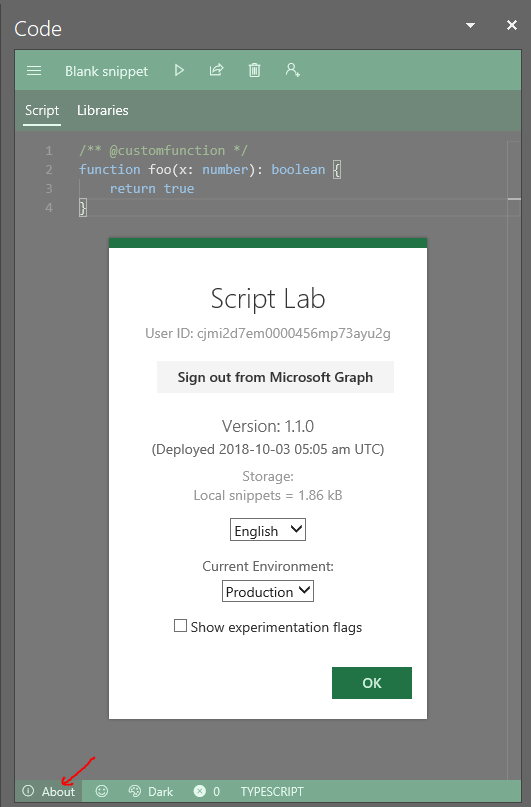
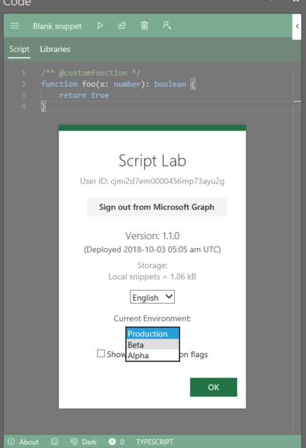
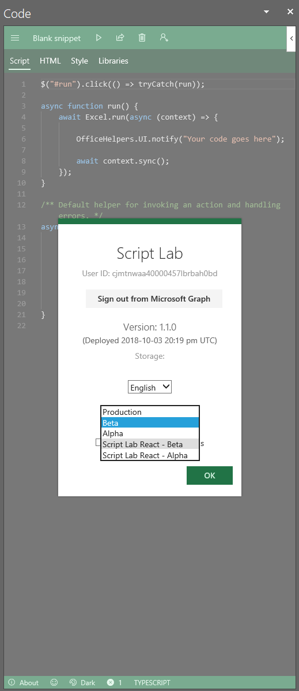
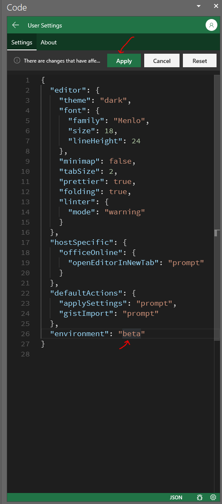

To switch to Script Lab React, you first need to be in the Beta version of today's Script Lab. The extra layer of redirection is to ensure that people don't accidentally end up in the new experience until it's ready.
You can do this by clicking opening the code editor and clicking the about button in the bottom left corner.

If you haven't already, switch to the Beta environment. Press
OK and the page will reload.

After opening the page, select the Script Lab React - Beta option.

For the basic scenarios, things should "just work". Moreover:
Refresh at the top of the runner in
order to refresh the snippet. (The message bar prompting for reload has not yet
been implemented.)
To switch back, you need to open the settings page of the editor.
This can be done by clicking the small settings icon in the bottom right, or by
pressing Ctrl + , in the editor.
Once in the settings view, change environment to beta and press apply
at the top.

In order to get access to the repo, which is needed in order submit issues, you must follow the following steps: